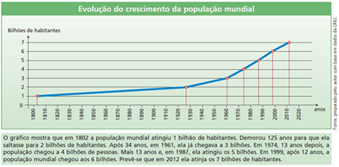
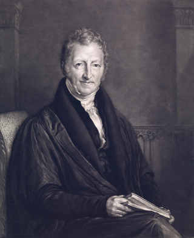
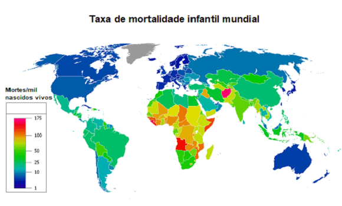
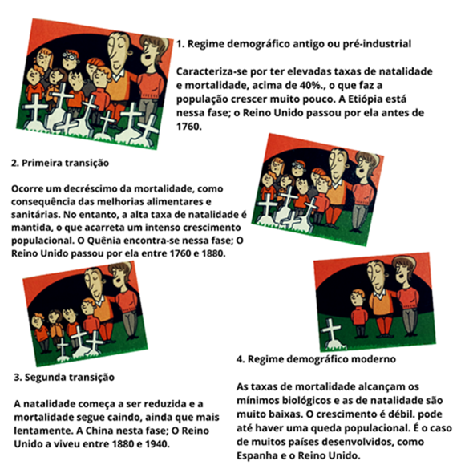
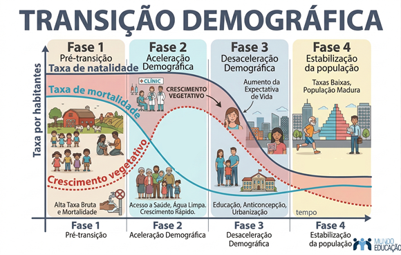
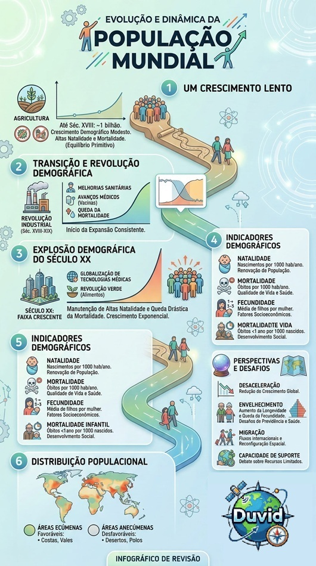

Conteúdo: Conceito de demografia: taxas de mortalidade, natalidade e fecundidade. Transição
demográfica. Estrutura etária. Teorias populacionais e mudanças socioeconômicas.
Objetivo: Entender e aplicar os principais conceitos da demografia: taxas de mortalidade,
natalidade e fecundidade, transição demográfica, teorias demográficas e estrutura da população.
Digite seu nome
Introdução
Na aula passada conhecemos a arquitetura da globalização e uma visão
atual sobre a dinâmica do mundo.
Nesta aula, veremos como a população mundial se movimenta e quais são as principais questões envolvendo sua
distribuição pelo globo terrestre.
A compreensão das dinâmicas populacionais é um pilar essencial para desvendar os desafios e oportunidades que
moldam o nosso mundo.
Questões para serem respondidas no caderno sobre o tema da aula de hoje:
1. Explique o conceito de Revolução Demográfica e como ela impactou o crescimento populacional mundial.
2. O que é a explosão demográfica e quais fatores a impulsionaram?
3. Analise como a transição demográfica reflete a evolução de uma sociedade agrária para uma urbana-industrial, destacando seu impacto no crescimento vegetativo
4. Compare a taxa de natalidade e a taxa de fecundidade. Qual a importância de cada uma para os estudos
demográficos?
5. Por que a mortalidade infantil é um importante indicador da qualidade de vida em uma sociedade?
6. O que a teoria de Thomas Malthus previa sobre o crescimento populacional? Essa previsão se
concretizou?
7. Quais são as principais diferenças na dinâmica populacional entre países desenvolvidos e países em
desenvolvimento?
8. Quais desafios as sociedades enfrentam devido ao envelhecimento populacional?
9. Como a migração influencia a distribuição da população pelo mundo?
10. Por que as taxas de fecundidade estão diminuindo globalmente? Quais fatores explicam essa mudança?
Evolução da População Mundial: Fases e Dinâmicas
O Período de Crescimento Lento
Até o século XVIII, a população global apresentava um crescimento demográfico modesto, atingindo a marca de
aproximadamente 1 bilhão de habitantes apenas por volta de 1800. Esse ritmo lento era reflexo do
equilíbrio demográfico primitivo, caracterizado por altas taxas de natalidade compensadas por taxas
de mortalidade igualmente elevadas.
Fatores como a precariedade das condições sanitárias, a baixa eficiência da medicina da época e a ocorrência
frequente de epidemias e fomes cíclicas limitavam o aumento populacional. A base econômica era
predominantemente agrícola e dependente de variáveis climáticas, o que restringia a capacidade de
suporte para um crescimento acelerado.

A Transição e a Revolução Demográfica
A partir do final do século XVIII e durante o século XIX, o cenário iniciou uma transformação profunda com a
"Revolução Demográfica". Este período foi marcado pela queda acentuada das taxas de mortalidade, resultante
das inovações da Revolução Industrial, que trouxeram melhorias no saneamento básico e avanços na medicina
preventiva.
A redução da mortalidade, enquanto a natalidade permanecia elevada, gerou um excedente populacional
significativo.
O aumento da expectativa de vida e a urbanização crescente foram os pilares que permitiram o início de
uma expansão mais consistente da população mundial em escala global.
A Explosão Demográfica do Século XX
Ao longo do século XX, ocorreu o fenômeno conhecido como Explosão Demográfica. As taxas de natalidade
permaneceram altas em diversas regiões, enquanto as de mortalidade caíram drasticamente devido à difusão
de tecnologias médicas, vacinação em massa e melhorias na produção e distribuição de alimentos.
Em períodos mais recentes, o crescimento acelerado passou a ser acompanhado por novas dinâmicas sociais.
À medida que as sociedades se industrializavam e se urbanizavam, a entrada da mulher no mercado de trabalho
e o planejamento familiar começaram a reduzir os índices de fecundidade, sinalizando uma transição
para uma fase de estabilização populacional.
Perspectivas para o Futuro Demográfico
As projeções demográficas indicam uma desaceleração no ritmo de crescimento da população mundial. Embora o
total de habitantes continue a aumentar nas próximas décadas, a taxa de crescimento anual tem declinado,
refletindo a entrada de diversos países em fases avançadas da transição demográfica. Os principais desafios
contemporâneos incluem o envelhecimento populacional, os fluxos migratórios internacionais e as disparidades
na distribuição geográfica.
No século XXI, a dinâmica populacional apresenta uma heterogeneidade acentuada entre as regiões do globo.
Países desenvolvidos e alguns emergentes enfrentam os impactos socioeconômicos da redução da base da
pirâmide
etária e o aumento da longevidade. Em contrapartida, nações em desenvolvimento, especialmente na África
Subsaariana,
ainda apresentam taxas de natalidade elevadas. Esse cenário exige políticas públicas voltadas para a
sustentabilidade, planejamento urbano e integração de imigrantes, visando o equilíbrio entre os recursos
disponíveis e as necessidades das populações locais.
Análise do Crescimento Populacional: Indicadores Demográficos
O estudo da demografia fundamenta-se na análise quantitativa de dados para compreender as transformações
sociais.
O crescimento populacional é mensurado por meio de indicadores específicos que permitem comparar diferentes
realidades e prever tendências futuras. (Acesse as fórmulas e definições aqui).
A seguir, exploramos os conceitos essenciais de natalidade, mortalidade e fecundidade.
×
Principais Indicadores Demográficos:
Taxa Bruta de Natalidade (TBN): Representa o número de nascidos vivos para
cada grupo de 1.000 habitantes em um determinado ano.
$$TBN = \frac{\text{nº de nascidos}}{\text{população total}} \times 1.000$$
Taxa Bruta de Mortalidade (TBM): Representa o número de óbitos para cada
grupo de 1.000 habitantes em um determinado ano.
$$TBM = \frac{\text{nº de óbitos}}{\text{população total}} \times 1.000$$
Taxa de Crescimento Vegetativo (TCV): É a diferença entre a natalidade e a
mortalidade, expressa geralmente em porcentagem.
$$TCV = TBN - TBM$$
Taxa de Mortalidade Infantil (TMI): Indica o número de crianças que morrem
antes de completar um ano de idade para cada 1.000 nascidos vivos.
$$TMI = \frac{\text{óbitos menores de 1 ano}}{\text{nascidos vivos}} \times 1.000$$
Taxa de Fecundidade: Estimativa do número médio de filhos que uma mulher
teria ao longo de seu período reprodutivo.
Destaques Demográficos
Disparidades Globais
Apesar dos avanços globais em saúde, as desigualdades regionais permanecem críticas: uma criança nascida
na África
ainda possui uma probabilidade significativamente maior de morrer antes dos cinco anos em comparação a
uma
criança na Europa ou América do Norte.
Contudo, há progressos: na África, a taxa de mortalidade infantil reduziu-se drasticamente desde 1950,
evidenciando a eficácia de programas de saúde pública e saneamento.
A taxa de fecundidade global demonstra uma tendência de queda contínua: de uma média de 5 filhos por
mulher em 1950,
o índice reduziu para aproximadamente 2,3 em 2020, aproximando-se do nível de reposição populacional
(2,1).
Fonte: Banco Mundial.
Natalidade, Mortalidade e Fecundidade
O estudo da dinâmica populacional fundamenta-se em três indicadores principais. O primeiro é a
natalidade, que representa a frequência de nascimentos em uma população dentro de um
período determinado. Este índice é essencial para calcular o crescimento natural e entender a renovação
geracional de uma sociedade.
A fecundidade é um indicador mais específico, que estima o número médio de filhos que uma
mulher teria ao longo de seu período reprodutivo. Diferente da natalidade, a fecundidade reflete variáveis
socioeconômicas profundas, como o nível de escolaridade, o acesso a métodos contraceptivos, o custo de vida
urbano e a inserção da mulher no mercado de trabalho.
Complementando a análise, a mortalidade indica o número de óbitos em uma população em um
dado período. A análise dessas taxas permite aferir a eficácia das políticas de saúde pública, as condições
de saneamento básico e o nível de desenvolvimento socioeconômico de uma região, fatores que impactam
diretamente a expectativa de vida e a longevidade.
Thomas Robert Malthus e a Teoria Malthusiana

Thomas Robert Malthus, economista britânico do final do século XVIII, formulou uma das primeiras teorias
demográficas sistemáticas. Em sua obra, Malthus alertava para um desequilíbrio estrutural entre o
crescimento populacional e a produção de meios de subsistência, prevendo um colapso social caso o
crescimento não fosse controlado.
A teoria malthusiana sustentava que a população tendia a crescer em progressão geométrica
(PG), enquanto a produção de alimentos cresceria apenas em progressão aritmética
(PA). Segundo Malthus, esse descompasso resultaria inevitavelmente em crises de fome,
epidemias e guerras, que atuariam como freios naturais ao excesso populacional.
Embora pioneira, a teoria recebeu críticas severas ao longo do tempo. Malthus subestimou o impacto das
inovações tecnológicas na agricultura — a chamada "Revolução Verde" — que aumentou exponencialmente a
produtividade do campo. Além disso, ele não previu a queda espontânea da natalidade decorrente da
urbanização e do desenvolvimento social, fenômenos que invalidaram suas projeções mais pessimistas no
longo prazo.
A Mortalidade em Foco
A análise da mortalidade em escala global revela disparidades acentuadas entre diferentes regiões. Essas variações são explicadas por uma combinação de fatores históricos, níveis de desenvolvimento econômico e o acesso desigual a infraestruturas básicas. Países com sistemas de saúde consolidados e ampla cobertura de saneamento apresentam taxas significativamente menores em comparação a nações com vulnerabilidades socioeconômicas.
Um indicador central nesta análise é a mortalidade infantil. Este índice mede o número de óbitos de crianças menores de um ano para cada mil nascidos vivos. A mortalidade infantil é considerada um dos principais termômetros do desenvolvimento social de um país, pois reflete diretamente a qualidade da assistência pré-natal, as condições de higiene, a eficácia das campanhas de vacinação e o estado nutricional da população.

Esperança de Vida ao Nascer
A esperança de vida ao nascer, ou longevidade média, é um indicador estatístico que projeta o número médio de anos que se espera que um recém-nascido viva, mantidas as taxas de mortalidade observadas no momento de seu nascimento. Este índice sintetiza as condições gerais de vida de uma população, conectando avanços na medicina, segurança pública e qualidade ambiental.
O aumento global da expectativa de vida nas últimas décadas é resultado direto da expansão da saúde pública e de inovações biotecnológicas. No entanto, as desigualdades socioeconômicas criam contrastes profundos: enquanto países desenvolvidos atingem médias superiores a 80 anos, regiões em conflito ou com extrema pobreza apresentam números consideravelmente inferiores, evidenciando o impacto do meio social na biologia humana.
Crescimento Vegetativo e Crescimento Real
A dinâmica demográfica de um local é definida inicialmente pelo crescimento vegetativo (ou natural). Este conceito representa a diferença entre a taxa de natalidade e a taxa de mortalidade. O crescimento é positivo quando nascem mais pessoas do que morrem, e negativo quando o número de óbitos supera o de nascimentos, fenômeno observado atualmente em diversos países europeus e no Japão.
Para determinar o crescimento real (ou demográfico) de uma população, deve-se somar o crescimento vegetativo ao saldo migratório (a diferença entre a entrada e a saída de pessoas). A migração é influenciada por fatores de "expulsão" nos países de origem (como guerras, crises econômicas ou perseguições) e fatores de "atração" nos países de destino (como oferta de emprego, estabilidade política e direitos civis).
Imigração e Emigração
A imigração caracteriza-se pela entrada de indivíduos em um país ou região que não é seu local de origem, visando residência temporária ou permanente. Economicamente, a imigração pode suprir carências de mão de obra e contribuir para o dinamismo cultural, embora possa gerar debates políticos sobre integração social e soberania nacional.
A emigração, por outro lado, é o processo de saída do país de origem. Geralmente, ocorre em busca de melhores condições de subsistência ou segurança. O fluxo constante de emigrantes e imigrantes altera a estrutura etária das populações, influenciando diretamente a oferta de trabalhadores e o sistema de previdência social das nações envolvidas.
Modelos de Crescimento Demográfico
O crescimento populacional pode ser analisado através de modelos matemáticos que descrevem como as sociedades se expandem no espaço e no tempo. O crescimento exponencial ocorre quando uma população aumenta a uma taxa constante, resultando em um salto numérico rápido em curtos períodos. Entretanto, na realidade geográfica, prevalece o crescimento logístico.
O modelo logístico considera a capacidade de suporte do meio ambiente. À medida que a população se aproxima do limite de recursos disponíveis (espaço, alimento, água), o ritmo de crescimento desacelera até atingir um ponto de equilíbrio ou estabilização. Fatores como avanços tecnológicos podem elevar essa capacidade de suporte, mas os limites biofísicos do planeta permanecem como uma variável crítica.

O Ritmo Diferenciado do Crescimento Global
A distribuição do crescimento populacional é heterogênea. Países desenvolvidos encontram-se, em sua maioria, na fase final da transição demográfica, apresentando crescimento lento, nulo ou até negativo. Esse fenômeno é resultado de altos níveis de urbanização, ampla escolaridade e planejamento familiar consolidado.
Em contraste, muitas nações em desenvolvimento ainda apresentam taxas de crescimento elevadas. Embora a mortalidade tenha caído nessas regiões, a natalidade permanece alta devido a fatores socioeconômicos e culturais. Essa disparidade cria um cenário global onde o aumento populacional está concentrado em regiões que enfrentam maiores desafios de infraestrutura e segurança alimentar.
A Transição Demográfica
A Transição Demográfica é o conceito que descreve a passagem de um regime de alta natalidade e mortalidade para um regime de baixas taxas. Esse processo ocorre em quatro fases principais:
Fase 1 (Pré-industrial): Alta natalidade e alta mortalidade (crescimento lento).
Fase 2 (Explosão Demográfica): Queda brusca da mortalidade com natalidade ainda alta (crescimento acelerado).
Fase 3 (Desaceleração): Queda da natalidade e estabilização da mortalidade (crescimento reduzido).
Fase 4 (Estabilização): Baixa natalidade e baixa mortalidade (equilíbrio demográfico moderno).

Fonte: Mundo Educação.
Estrutura Etária e o Envelhecimento Populacional
Atualmente, o mundo vivencia um processo acelerado de envelhecimento populacional. Com o aumento da expectativa de vida e a queda da fecundidade, a proporção de idosos na população total cresce significativamente. Esse fenômeno gera impactos diretos na economia, exigindo reformas nos sistemas de previdência e maiores investimentos em saúde geriatra.
A análise da estrutura econômica de um país divide a população entre População Economicamente Ativa (PEA) — indivíduos em idade de trabalhar que estão empregados ou procurando emprego — e a população inativa (jovens e aposentados). O equilíbrio entre esses grupos é fundamental para a manutenção do dinamismo econômico e do bem-estar social.
Fatores da Distribuição Populacional
A ocupação humana no espaço geográfico é influenciada por fatores naturais e fator humanos. Áreas próximas a cursos d'água, vales férteis e regiões de clima temperado tendem a ser densamente povoadas (áreas ecúmenas). Por outro lado, desertos, regiões polares e cadeias montanhosas dificultam a fixação humana (áreas anecúmenas).
Além das condições físicas, fatores econômicos como a presença de indústrias, polos de serviços e infraestrutura de transportes determinam os principais fluxos de adensamento populacional na contemporaneidade, consolidando as grandes regiões metropolitanas globais.
Infográfico - Resumo

Fonte: Organizado pelo autor.
Teste seu conhecimento
Qual foi o impacto da Revolução Demográfica no crescimento populacional?
Teste seu conhecimento
O que descreve a transição demográfica?
Teste seu conhecimento
O que é esperança de vida ao nascer?
Ao encorajar perguntas, estamos fortalecendo o espírito investigativo e crítico dos
indivíduos, promovendo o pensamento autônomo e a busca constante por respostas e soluções.
P:
Por que em alguns lugares têm mais gente do que outros? Tipo, a Ásia é superpopulosa, enquanto a
Antártica quase não tem ninguém. Por que será que isso acontece?
R:
Boa pergunta! É bem curioso como a população é distribuída pelo mundo. A Ásia realmente se destaca,
sendo o continente mais populoso, com bilhões de pessoas! Isso tem a ver com vários fatores, como
recursos naturais, climas favoráveis em algumas regiões e tradições culturais. Por outro lado, a
Antártica é um caso especial. Ela é supergelada e não oferece condições de vida estáveis para a maioria
das pessoas. Além disso, tem um tratado internacional que restringe a ocupação humana para fins
científicos. É interessante pensar como esses fatores moldam a maneira como a população é distribuída
pelos continentes.
P:
Eu estava lendo sobre algo chamado "transição demográfica". Parece que as populações mudam muito com
o tempo. O que exatamente é essa transição e o que ela nos diz sobre as sociedades?
R:
A transição demográfica é uma viagem incrível no tempo das populações. Ela mostra como as taxas de
natalidade e mortalidade se transformam à medida que as sociedades evoluem. Sabe aquela época em que as
populações cresciam devagar por causa de doenças e condições precárias? Então, isso é o início da
transição. Conforme as nações se desenvolvem, melhoram a saúde, a higiene e a educação, a mortalidade
cai, fazendo a população crescer mais rápido. E aí, com mais acesso a informações e opções de vida, as
famílias têm menos filhos, levando a um crescimento mais controlado. É como uma história emocionante que
as sociedades passam, enfrentando desafios e encontrando soluções para crescer de maneira mais
equilibrada.
P:
Quais as consequências do envelhecimento da população? Por que isso está acontecendo? E quais as
consequências disso?
R:
O envelhecimento da população é algo que está chamando bastante atenção! É bem interessante como isso
acontece. Com o avanço da medicina e melhores condições de vida, as pessoas estão vivendo mais. E isso é
ótimo, certo? Só que tem um efeito colateral curioso: a proporção de pessoas idosas está aumentando.
Isso acontece porque as taxas de natalidade estão diminuindo em muitos lugares, então temos mais pessoas
vivendo por mais tempo. Isso pode afetar a economia, a seguridade social e até mesmo a dinâmica das
famílias. Imagina, é como se tivéssemos que repensar algumas coisas para garantir que as pessoas idosas
tenham qualidade de vida, já que elas serão uma parte cada vez mais importante da população.
CANDELORI, Roberto. Enciclopédia do Estudante: geografia geral. São Paulo: Moderna, 2008.
SANTOS, Milton. O espaço do cidadão. São Paulo: Editora da Universidade de São Paulo, 2008.
VOGLER, Christopher. A jornada do escritor: estruturas míticas para escritores.
Tradução de Ana Maria Machado. 2.ed. Rio de Janeiro: Nova Fronteira, 2006.
SKOLNICK, Evan. Video game storytelling: what every developer needs to know about
narrative techniques.New Yoirk: Watson-Guptill, 2014.